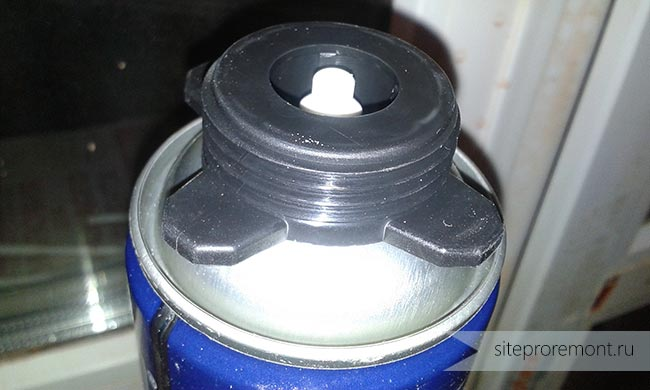
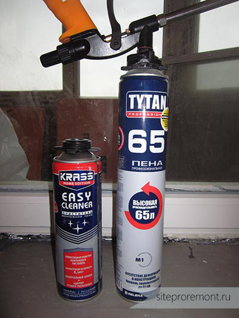
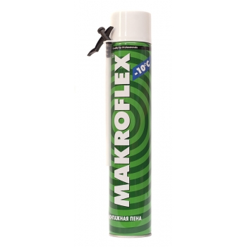
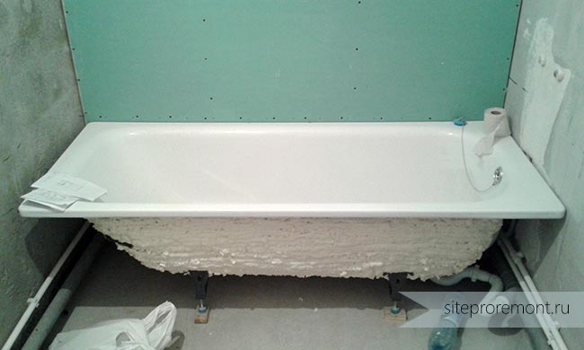
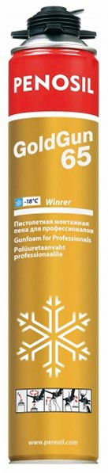
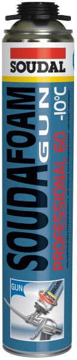

Строительные монтажные пены , их марки и применение

Друзья, вновь приветствую вас на страницах сайта! Перерыв в написании статей у меня закончился, а значит, продолжаем повышать квалификацию дальше) На сегодня у меня припасена для вас очень важная инфа, которую, вообще-то, полезно знать каждому.
Нашим героем в этот раз будет монтажная пена. Ну, знаете, в баллонах такая. Ведь любой нормальный ремонт немыслим без нее! Я расскажу о ней все, что мне известно. Расскажу, как не облажаться при ее выборе, а также при использовании. Что ж, приступим!
Монтажная пена (МП) – это некая разновидность полиуретановых герметиков. Это роднит ее с такими вещами, как губки для мытья посуды, то есть, это, по сути, поролон. Необычный, конечно, там еще много всякой всячины напихано в баллоны…
Если попытаться объяснить кратко – в баллоне находится жидкий преполимер и газ-вытеснитель, также называемый пропеллентом. За счет этого сжатого газа пена и прет наружу.
Застывает она (внимание) при воздействии с влагой на поверхности и той, что присутствует в воздухе. Что это значит? А то, что чем суше воздух, тем дольше будет происходить полимеризация, и наоборот. Следовательно, можно влиять на скорость затвердения МП путем увлажнения поверхности и опрыскивания самой пены. Готов спорить, 99% из вас этого не знали)
По ходу статьи я буду и дальше разрушать мифы). Давайте узнаем о нашем герое побольше.
СвойстваВ застывшем виде пена представляет собой твердое, но упругое пористое вещество светло-желтого цвета (почти белого), практически ничего не весящее. Не является влагостойким, крайне чувствительно к ультрафиолету. То есть на солнце желтеет и теряет упругость, разрушается. Является неплохим шумо- и теплоизолятором.
Характеристики монтажной пены- Объем выхода – это суммарный объем расширившегося и затвердевшего продукта с одного баллона. Измеряется этот параметр в литрах, и он обычно указан на баллонах. Наверняка вы видели на них числа: 50, 65 или 70… А теперь ломаем следующий миф. Эти цифры – полная ересь. Даже не так. Полнейшая! Эти числа всего лишь соответствуют объему пропеллента в баллоне при обычных условиях. В реальности пены получается значительно меньше. Это зависит, например, от температуры воздуха, но, вообще, факторов много. Навскидку вместо 65 выходит около 35 литров.
- Адгезия – способность пены прилипать, если хотите. МП с легкостью пристает к любому материалу, за исключением: тефлона, полиэтилена, силикона, льда, масла, полипропилена. Так что не пытайтесь приклеить на пену кусок льда к куску тефлона.
- Первичное расширение – это то расширение, которое происходит сразу после выхода монтажной пены из баллона. И оно мощное – состав расширяется в разы.
- Вторичное расширение – увеличение объема пены, происходящее после первичного и до полного затвердения. Этот параметр разнится для продукции разных марок. Он лежит в пределах 15%-100%. Сразу говорю – чем меньше вторичное расширение, тем лучше! Понимаете, пена может с легкостью ломать деревянные окна. Без проблем она гнет и ПВХ. Например, вы ставите подоконник на дерьмовую пену, и на следующие сутки он у вас оказался похож на Гималаи… Короче, это очень важный параметр. О нем мы еще поговорим.
- Вязкость. Бывает, попадаются МП, которые как сопли, все текут. Такое еще бывает, когда температура окружающей среды при работе выходит за допустимые пределы.
Существуют различные виды монтажной пены, в зависимости от условий и техники применения и состава.

Клапан баллона с пеной
Во-первых, она бывает профессиональная и бытовая. Профессиональная пена создана для работы со специальным монтажным пистолетом. На баллоне присутствует специальный кольцевой клапан, так он навинчивается на подобный клапан пистолета.

Монтажный пистолет, пена и промывка
При этом вещество под давлением проникает в полость инструмента и сдерживается только клапаном, управляемым курком. Пистолет делает рабочий процесс приятным и удобным, с ним очень легко контролируется напор и направление нанесения.

Бытовая пена Makroflex
Бытовая пена снабжена специальной пластиковой трубкой и не требует наличия пистолета. Она уступает профессиональной по многим параметрам. У нее больше вторичное расширение, меньше объем выхода, ею неудобно работать. К тому же там часто газ может закончиться быстрее, чем преполимер, или наоборот. Короче, ад). Тем более, она, по идее, одноразовая.
Но иногда удается очистить трубку с помощью небольшой хитрости. Переворачиваете баллон клапаном вверх и открываете его. В трубку пойдет только газ, он и вытолкнет из нее остатки пены.
Я категорически не советую применять бытовую пену для каких-то ответственных работ, вроде установки окон, дверей, подоконников. Тем более, что монтажный пистолет для пены стоит не так уж дорого, обычно от 400 рублей. Есть конечно, модели и по 2000 рублей, но оно нам не надо. У меня пистолет за 800 рублей, неплохой агрегат, в принципе. Фирма Pobedit.
Советую, кстати, приобретать разборный, чтобы можно было почистить в случае необходимости. Но делать это нужно крайне осторожно.
Кроме разделения «PRO»/«KOLHOZ-style» существует классификация по составу. Есть пены однокомпонентные и двухкомпонентные. Но я мог бы этого и не писать, ибо двухкомпонентных пен, как бы, нет)). Для нас, по крайней мере, ибо они суперсложны в применении, так как представляют собой 2 состава, которые нужно смешать. Однокомпонентные – это обычные пены для простых смертных.
Следующее разделение – по температуре использование. Бывают пены летние, зимние и всесезонные. Зимняя пена отличается по составу от летней, она позволяет работать при температуре воздуха до -20 градусов (не для всех). Но тут есть нюанс – температура баллона не должна быть отрицательной.
Еще на баллонах вы могли видеть обозначения B1, B2, B3. Это классы горючести продукта. Монтажная пена, обозначенная B1, является огнеупорной. B2 – самозатухающая, B3 – горючая. Понятное дело, B1 – это круто.
Области применения пены

Шумоизоляция стальной ванны
В основном, пена применяется для герметизации (при установке окон, дверей и т.п.), звукоизоляции (трубы, стальные ванны), приклеивания (пенопласт и т.п.). Что касается окон и дверей, тут все ясно. Но причем тут вообще ванны? Дело в том, что стальные ванны жутко грохочут, когда в них наливается вода. Этот косяк можно частично исправить. Берется ванна и кладется на пол кверху ножками. Вся ее поверхность покрывается пеной, обильно и без пропусков, как на фото:
Только на фото ее уже поставили обратно. После затвердения шум воды становится значительно менее раздражающим.
Теперь насчет приклеивания. Пену также можно использовать для приклеивания легкой теплоизоляции, вроде пенопласта, на лоджиях, к примеру. Если не забыть прогрунтовать базовую поверхность, то держаться все будет намертво.
ВыборПризнанным эталоном среди профессиональных монтажных пен является продукция:
- Soudal Gun
- Penosil GoldGun
- Tytan Professional


У этих продуктов низкое вторичное расширение, хорошая вязкость и выход. Кроме того, они не приходят в негодность со временем. Даже не задумывайтесь над выбором хорошей пены, берите любую из этих трех. Мы, вот, однажды взяли Макрофлекс для установки подоконников, так их настолько перекосило… Так что его я НЕ рекомендую.Если вы купите что-то другое (кроме перечисленных трех брендов), все испортите и будете задавать мне вопросы в комментариях, я на них даже не буду отвечать.
Применение пеныИтак, будем считать, что у нас есть монтажный пистолет и хорошая пена. Первым делом баллон следует энергично взболтать, причем это вам не йогурт, трясти нужно долго, примерно минуту, чтобы компоненты пены как следует перемешались. Вкручиваем баллон в пистолет и слышим резкое кратковременное шипение – это заполнились полости внутри инструмента.
Думаю, вы уже догадались, что баллон нужно располагать клапаном вниз. Попробуйте слегка надавить на курок, увидите, как из сопла тонкой струйкой полезет пена. Регулируйте силу нажатия на курок для качественного заполнения конкретного шва. Заполнять их, кстати, следует не полностью, а примерно на 1/3-? объема, так как пена еще расширится. Вертикальные швы заполняются внизу вверх, чтобы пене было на чем держаться.
Если вам нужно, что бы МП застыла побыстрее, увлажните рабочую поверхность, а после побрызгайте пену дополнительно водой. Через час уже можно обрезать ножом излишки. Полностью процесс полимеризации обычно занимает сутки.
При перерывах в работе совсем необязательно отсоединять баллон от пистолета, даже совсем наоборот. Внутри инструмента она не затвердеет. Промойте лишь носик специальным очистителем. Он всегда продается там, где есть пена, стоит порядка 130 рублей.
Насколько я понимаю, это обычный ацетон, может быть, с какими-то добавками. Если работа окончательно завершена, открутите баллон. Промойте очистителем кольцо пистолета, а затем накрутите баллон с ним на инструмент и нажмите на курок до конца. Сначала из сопла будут вырываться остатки пены, а затем пойдет очиститель. В этот момент отпустите курок и выкрутите баллон, пусть остатки очистителя остаются в стволе. Не забудьте также промыть кольцо на баллоне с самой пеной! Никаких ее остатков быть не должно.
Кстати, всегда работайте в перчатках. Если пена попадет на кожу, смыть ее очистителем нетрудно, но потом наступает такое мерзкое ощущение…
Уже застывшую МП такие очистители не берут, для этого нужны специальные составы. Но они, как правило, тоже продаются в любом уважающем себя строительном магазине.
Вот такая вот занимательная информация, друзья. Надеюсь, для вас она будет полезной. Впереди будут новые забойные статьи, так что рекомендую подписаться на них, чтобы не пропустить.
До встречи на страницах сайта! Удачного ремонта!
По материалам сайта : http://siteproremont.ru/